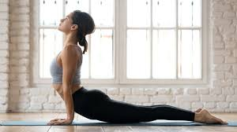
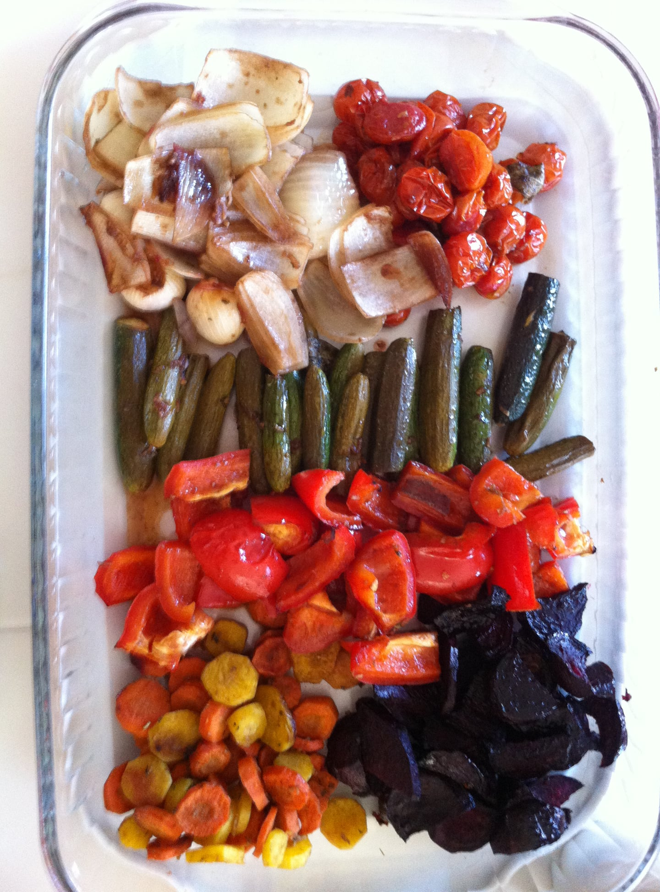
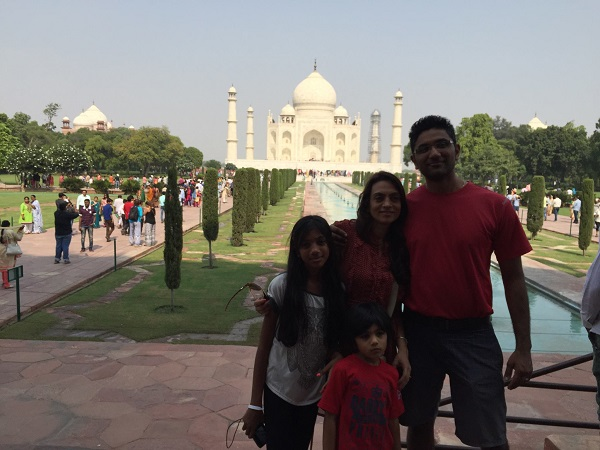

What is Fitness Edventure?
Hello and welcome! I am happy you are here. My name is Eshani. For me finding the right balance in life is an edventure - education and adventure. Learning from your experiences, learning new things, traveling and experiencing different cultures, food. Throw in some Hi tech in there and it's a perfect blend. That's wheer the idea of this website came along. I am a preschool / kindergarten teacher, architect, mother, wife, daughter and more. I love to paint, cook and bake with my children. I also love to experiment with food and obsess over making itnutritious, healthy and yet delicious. Yoga, dance, and fitness is another passion of mine. As a family, we love to travel and experience different cultures.
I started out with a degree in architecture and worked for many years as an architect and interior designer. When I volunteered at my daughter's school, I realized I love being around little children so I went back to school and got my Master Teacher certificate. I have been teaching for the past 10 years. I am now, back in school learning some coding and web designing. My goal is to earn a degree in Web design and get a job that allows me to use my design skills and spend time with my family at the same time.
I am not an "expert" in the nutrition or fitness but I do share my experiences in healing my gut and getting to a healthier place. If that's what you are looking for, you have come to right place. In this space I share my experiments and experiences in cooking, fitness, travel and being a mother.
  